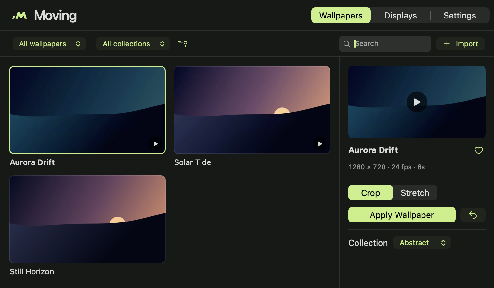

macOS desktop utility
Video wallpapers for Mac.
Put your own videos and images on your desktop. Choose a fit for each display and control playback from the menu bar.


Installation
- Open the downloaded
.dmgin Finder. - Drag Moving into Applications, then eject the disk image.
- Open Moving from Applications. Click its menu bar icon and choose Library.
- Choose a bundled wallpaper or click Import. Pick Crop or Stretch and click Apply Wallpaper.
Closing the library leaves playback running. To start Moving when you sign in, turn on Settings → Launch at login.
What it does
- Wallpaper fit
- Crop keeps the original proportions and trims the edges. Stretch fills the screen by resizing to its shape.
- Per-display playback
- Set a different wallpaper and fit for each connected display.
- Pause when covered
- When a maximized or full-screen window covers the display, Moving holds the current frame and resumes when the desktop is visible again.
- Library & menu bar
- Preview, search, favorite and group your files. Pause or switch wallpapers from the menu bar.
Technical specifications
- System
- macOS 14.0 or later
- Architectures
- arm64 and x86_64 in one build
- Video
- Compatible local MP4 and MOV files. Playback is muted.
- Images
- JPEG, PNG, HEIC and other supported still formats
- Native stack
- Swift, AppKit, SwiftUI and AVFoundation
- Storage
- Local library, thumbnails and playback cache
- Desktop
- One assignment per display, shared across ordinary Spaces
- Bundled media
- Aurora Drift, Solar Tide and Still Horizon
Playback & performance
| Profile | Long edge | Frame rate |
|---|---|---|
| Battery Saver | 1,280 px | 24 fps |
| Balanced | 1,920 px | 30 fps |
| Performance | Source resolution | 60 fps |
With battery optimization enabled, Balanced uses 1,280 px and 24 fps on battery. Videos above the selected limits may need a one-time conversion. Each active display adds playback load.
Measured on an Apple M5
Moving 1.2.0 build 6, one display, AC power, one cached 1080p/30 fps clip. The app process averaged 0.047% of one core and 62.8 MiB median physical memory footprint over 45 seconds. The separate macOS decoder averaged 0.051% and 66.0 MiB over 10 seconds. This test measured process CPU and memory. Battery drain and GPU use are unmeasured.
Wallpaper demo
Aurora Drift
A six-second, silent loop included with Moving. Press Play to see it in motion.
1280 × 720 · 24 fps
Help & FAQ
Why won't a video import?
Try a local, unprotected H.264 MP4 and check whether it opens in QuickTime Player. Download any cloud-only file first. If a file that was already in Moving has moved, use Locate File.
Why is the wallpaper paused or showing a still?
Check the status under Displays. Covered displays, manual pause, or energy settings can suspend playback. Moving runs over the desktop while open. macOS manages its own login and lock-screen wallpaper.
How do I update or upgrade from Motion?
Quit the app before replacing it in Applications. When upgrading from the older Motion app, move Motion.app to Trash and install Moving.app. The library is stored separately. If an imported file needs access again, use Locate File.
How do I restore my system wallpaper or uninstall?
Use Displays → Restore All Displays to clear assignments. To uninstall, turn off Launch at login, quit Moving, and move it from Applications to Trash. The original files stay where you saved them.
What if macOS blocks the installer?
Check that your Mac meets the system requirements and that the file matches the published checksum. A public download requires a Developer ID signature and Apple notarization. Keep Gatekeeper enabled.
Release notes
1.2.0 / build 7
- New Moving name, original logo, and smaller library window.
- Covered displays retain a still frame and resume from the saved point.
- The menu bar popup takes focus and dismisses on Escape or outside clicks. Previous and next are arrow buttons.
Privacy & license
Moving stores its library, assignments and playback cache on your Mac. The app uses no account, telemetry, cloud sync or remote wallpaper catalog.
This page has no analytics scripts. The theme switch saves your choice in your browser.